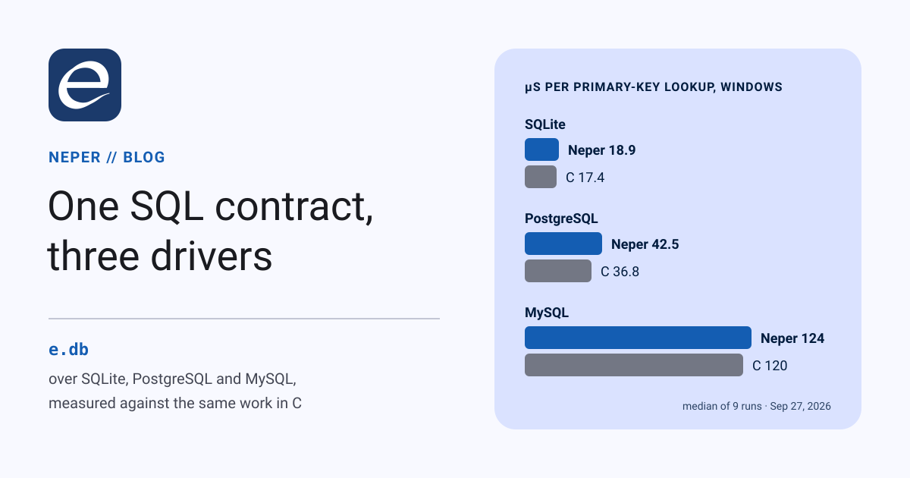

One SQL contract, three drivers

Neper's standard library has had a database contract, e.db, for a while, with nothing behind it. Today it has three drivers: SQLite, PostgreSQL and MySQL. Each binds the vendor's own C client library, and each is tested against a live server on Windows and Linux. This post walks through the contract, shows how to write a driver, explains what differs between the three, and ends with numbers: the same workload through the drivers and through hand-written C.
The contract
e.db is deliberately small. It defines four handles, one table of functions, a value type and five errors:
type Connection = struct { ctx: *void, driver: *const Driver }
type Statement = struct { ctx: *void, driver: *const Driver }
type Rows = struct { ctx: *void, driver: *const Driver }
type Transaction = struct { ctx: *void, driver: *const Driver }
type Value = union enum u8 { Null, Bool: bool, I64: i64, U64: u64, F64: f64, Text: str, Bytes: []const u8, Time: time.Instant }
type Parameter = struct { name: str, value: Value }
type Column = struct { name: str, kind: ValueKind, nullable: bool }
type Driver = struct { close: fn(ctx: *void) -> err, prepare: ..., execute: ..., query: ..., begin: ...,
statement_close: ..., statement_execute: ..., statement_query: ...,
rows_columns: ..., rows_next: fn(ctx: *void, dst: []Value) -> (bool, err), rows_close: ...,
transaction_execute: ..., transaction_query: ..., transaction_commit: ..., transaction_rollback: ... }
error Closed
error InvalidQuery
error Constraint
error Busy
error Unsupported- A handle is a context plus a table. Every
e.dbcall dispatches through the table. Closing, committing or rolling back sets the context tonil, and anilhandle answersClosedwithout reaching the driver. So a double close, or a query after commit, behaves the same under every driver, and no driver has to write that logic. - Values are one tagged union of eight kinds. Parameters are positional or named. Columns report a kind, and
rows_nextfills a caller-owned row, which is a slice ofValue. - Five portable errors, and each driver adds its own. Code that only needs to know "was it a constraint" stays portable, and a driver's
detailcall returns the vendor's code and message when you need them. - Nothing is hidden. There is no driver registry, no global pool and no hidden allocator. The arena you pass to a driver's
openis the only memory it uses, and each driver documents what it keeps there. (e.db.poolexists as a pure state machine for when you do want pooling.)
Using it
This is examples/db/quickstart, in full:
use e.io
use e.mem
use e.db
use x.sqlite.sqlite
fn main(a: *mem.Arena) -> err {
var c = try sqlite.open(a, ":memory:")
let created = try db.execute(&c, "CREATE TABLE lang(name TEXT NOT NULL, year INTEGER)", zero)
var tx = try db.begin(&c)
var p: [2]db.Parameter = zero
p[0] = db.Parameter { name: "", value: db.Value{ Text: "Neper" } }
p[1] = db.Parameter { name: "", value: db.Value{ I64: 2026i64 } }
let inserted = try db.execute_transaction(&tx, "INSERT INTO lang VALUES (?, ?)", p[0..])
try db.commit(&tx)
var rows = try db.query(&c, "SELECT name, year FROM lang", zero)
var row: [2]db.Value = zero
while true {
let more = try db.reader_next_err(&rows, row[0..])
if !more { break }
switch row[0] {
case .Text as name:
try io.printf["{}\n"](name)
default:
ret db.InvalidQuery
}
}
try db.close_rows(&rows)
ret db.close(&c)
}Replace the open line with libpq.open(a, "host=… dbname=…") or mysql.open(a, options) and the rest of the program is unchanged. The one exception is PostgreSQL's parameter spelling, $1 rather than ?.
Writing a driver
A driver is three things: a context struct, fifteen functions with the table's signatures, and an open that fills in the table. examples/db/memory_driver is a complete driver in about 170 lines that keeps its rows in memory. It is worth reading whole, and it comes down to four steps.
1. A context behind every handle. The driver decides what ctx points at. A real driver keeps its library handle there; this one keeps rows.
type Store = struct { ids: [64]i64, names: [64]str, count: usize, committed: usize,
in_transaction: bool, cursor: usize, columns: [2]db.Column }
fn store_of(ctx: *void) -> *Store { ret mem.cast[*Store](ctx) }2. The functions. Each receives the context and answers in e.db's terms. The row reader is the interesting one:
// Committed rows are visible outside a transaction; inside one, all of them.
fn m_rows_next(ctx: *void, dst: []db.Value) -> (bool, err) {
let s = store_of(ctx)
if dst.len < 2usize { ret (false, db.InvalidQuery) }
var visible = s.committed
if s.in_transaction { visible = s.count }
if s.cursor >= visible { ret (false, ok) }
dst[0] = db.Value{ I64: s.ids[s.cursor] }
dst[1] = db.Value{ Text: s.names[s.cursor] }
s.cursor += 1usize
ret (true, ok)
}3. Hand back only the context. A Rows, Statement or Transaction that a driver returns carries just its context. e.db copies in the table from the connection it came from, so a driver never passes its own table around.
fn m_query(ctx: *void, sql: str, params: []const db.Parameter) -> (db.Rows, err) {
var rows: db.Rows = zero
if !str.eq(sql, "SELECT id, name FROM t") { ret (rows, db.InvalidQuery) }
store_of(ctx).cursor = 0usize
rows.ctx = ctx
ret (rows, ok)
}4. Fill the table once and hand out the connection.
fn open(s: *Store, driver: *db.Driver) -> db.Connection {
driver.close = m_close
driver.execute = m_execute
driver.query = m_query
driver.rows_next = m_rows_next
// ... the other eleven
ret db.Connection { ctx: mem.cast[*void](s), driver: driver }
}Binding a C library
The three real drivers follow one layout. A small module holds nothing but the C declarations, one variant file per OS. The driver module next to it is portable Neper and never names a library.
// lib/x/postgresql/capi.linux.e (capi.windows.e is identical but for "libpq.dll")
@import("libpq.so.5", "PQsendQueryParams")
extern fn send_query_params(conn: usize, command: *const u8, count: i32, types: usize,
values: usize, lengths: usize, formats: usize, result_format: i32) -> i32
@import("libpq.so.5", "PQgetvalue")
extern fn getvalue(result: usize, row: i32, column: i32) -> *u8- Handles are addresses.
PGconn*andsqlite3_stmt*cross asusize. An array that may be null when empty also crosses as theusizeaddress of its first element. - Foreign bytes are read through a view.
mem.viewover an arena header whose base is the C pointer names the bytes without copying them, and the driver copies what it keeps into its own buffer. - An import costs nothing until it is called. A program that never opens a database has no dependency on the library.
- Two lessons cost us a debugging session each. Arena memory is not zeroed: a reader context written field by field left one slice as garbage, so every context is now assigned as one struct literal. And C's
unsigned longis 32 bits on Windows but 64 on Linux, which is why MySQL's binding is the one pair of variants that differ in more than a library name.
SQLite: x.sqlite.sqlite
- The library the OS already ships. The driver binds
winsqlite3.dll(in System32 since Windows 10) andlibsqlite3.so.0, so nothing needs installing. The floor is SQLite 3.7.14, the version that addedsqlite3_close_v2. - A query steps once before it returns. That way bad SQL fails at
query, not at the first row, and an expression column likecount(*)can take its kind from that first row. - Affected rows come from
sqlite3_total_changes.sqlite3_changeskeeps reporting the previous statement's count after aCREATE, so the driver counts only when the total actually moved. - Kinds follow SQLite's affinity rules, plus two that SQLite lacks: an integer in a
BOOLcolumn comes back asBool, and one in aDATEorTIMEcolumn asTime.
PostgreSQL: x.postgresql.libpq
- Binary results. Integers, floats, booleans,
byteaand timestamps arrive exact, with no text to re-parse.numericis rendered from its base-10000 digits to the exact decimal at its stored scale (-0.000100stays-0.000100),uuidin its canonical spelling, and a type the driver does not know asBytesholding its binary representation. - Single-row mode. A query streams one row at a time, and nothing buffers the whole result. libpq allows one command in flight per connection, and the driver states that plainly: any call made while a reader is open answers
db.Busy. - The server settles parameter types. An unprepared statement sends each value in its natural type, with
Textasunknownso the server types it from context. A prepared statement is described once, and each execution encodes into the types the server chose. That is how anI64reaches anint4column in four bytes, with a range check. - The silent rollback.
COMMITof a transaction in which a statement failed answers with a rollback and no error. The driver checks the transaction status first and returnsAbortedrather than a success that never happened.
MySQL: x.oracle.mysql
- The text protocol, not
MYSQL_BIND. The prepared-statement API passes values in structs whose layout has changed between client versions and differs in MariaDB. Instead the driver renders parameters into the statement: text throughmysql_real_escape_string, blobs as hex, times as UTC datetimes.preparestill has the server compile the text, so a bad statement fails there. - A scanner that follows MySQL's lexer finds
?and;outside strings, backquoted identifiers and the three comment styles.SELECT CONCAT('?', ? /* ? */, "?") -- ?has exactly one placeholder. - A mutation test caught a double-literal bug. On its own,
0.1is aDECIMALliteral in MySQL, so the driver appendse0. Our first test could not tell whether the suffix was added once, twice or always, because MySQL readsSELECT 1e300e0as1e300with a column alias namede0. The fixture now checksSELECT ? + 0, which catches it. - Two errors arrive under the catch-all
HY000. A CHECK violation (3819) and aNOWAITlock (3572) are mapped by number. The live fixture is what found the first one.
How they are tested
There are four fixtures, each with one exit code per check:
link/x_db_unitstests the drivers' codecs with no server and no library: numeric decoding from hand-built bytes, parameter encoding, the MySQL scanner and literal rendering, and error mapping. Its binaries reference neither client library.link/x_sqlite,link/x_postgresqlandlink/x_mysqlrun 130 to 140 checks each against the real thing. They cover every value kind round-tripped, error codes and messages, streaming, a busy connection, prepared statements, commit and rollback, a 100 KB value, and a row lock that one connection holds and another is refused asBusy.
Each suite run starts throwaway servers with fresh data directories: PostgreSQL 18.6 and MySQL 8.4 on Windows, and the Ubuntu 24.04 packages (PostgreSQL 16, MySQL 8.0) on Linux. The whole block takes about 17 seconds per host. We also broke each driver on purpose to confirm the fixtures notice: a wrong numeric digit, a wrong SQLSTATE mapping, the busy guard, the statement splitter and the quote lexer were each caught with a distinct exit code.
Performance
Three phases run through e.db by benchmarks/db:
- insert: N rows of (bigint, text, double) through one prepared statement, in one transaction;
- scan: every row back through one streaming reader;
- lookup: primary-key reads through one prepared statement.
The same work is written directly against each C API in benchmarks/db/c/bench.c, using the strategy the matching driver uses: prepared statements for SQLite, binary parameters and single-row mode for PostgreSQL, escaped text for MySQL. The C baseline is therefore the floor for that design, not a different design.
Both sides ran 9 times, alternated, and the tables report medians. N is 100,000 rows and 20,000 lookups for SQLite, and 20,000 rows and 5,000 lookups for the servers. Everything ran on one laptop, a Core i5-12500H, under Windows 11 and under WSL2 Ubuntu 24.04. The servers were local and throwaway (PostgreSQL with fsync=off, MySQL at its defaults), and SQLite wrote a file with its default rollback journal. Other work was running on the machine, so read absolute numbers as ±15%; the Neper-to-C ratios are the stable part.
| Windows 11 | Insert rows/s Neper · C | Scan rows/s Neper · C | Lookup µs Neper · C |
|---|---|---|---|
| SQLite 3.51 | 1,272,074 · 1,607,658 | 4,504,768 · 8,800,106 | 18.9 · 17.4 |
| PostgreSQL 18.6 | 24,587 · 23,962 | 2,213,075 · 4,203,977 | 42.5 · 36.8 |
| MySQL 8.4.9 | 6,725 · 8,323 | 193,891 · 2,172,496 | 124.4 · 119.8 |
| Linux (WSL2) | Insert rows/s Neper · C | Scan rows/s Neper · C | Lookup µs Neper · C |
|---|---|---|---|
| SQLite 3.45 | 751,881 · 650,487 | 3,830,999 · 7,091,226 | 7.6 · 5.7 |
| PostgreSQL 16 | 12,355 · 9,804 | 2,377,881 · 3,165,579 | 104.7 · 106.1 |
| MySQL 8.0.46 | 3,369 · 4,291 | 165,483 · 2,242,201 | 212.8 · 262.6 |
Where Neper's median beat C's, the cell is highlighted.
Work bound by round trips runs at C's speed. Inserts and lookups against a server spend 37 to 260 µs per statement on the loopback round trip, and the driver disappears into that. Neper lands within about 25% of C in either direction, sometimes ahead, which is this machine's noise. The same goes for SQLite inserts: 79% of C on Windows, 116% on Linux.
A scanned row costs 105 to 215 ns more than in C. The C loop reads each value in place and throws it away. The driver copies each text value into the reader's buffer so it stays valid until the next row, builds a tagged Value per column, and dispatches through e.db. That is what a portable row costs. It shows up as half of C's throughput only because this benchmark does nothing with its rows.
SQLite lookups cost 1.5 to 2 µs more. The likely cause, not yet profiled, is that each execution of a prepared query builds a fresh reader and re-reads its column names and declared types. Caching that on the statement is the obvious fix.
MySQL's scan is the outlier, at 7–9% of C. On the text protocol a DOUBLE arrives as digits. The driver parses them with e.str.parse_f64, which is correctly rounded but has no fast path yet: a probe measured it at 4.0 µs per call, where C's strtod takes tens of nanoseconds. That one call is the whole gap: without the DOUBLE column, lookups land within 4% of C. Formatting has the same shape. push_f64 finds the shortest round-trip digits by bisection, re-parsing at each step, and takes 18 µs, which accounts for most of the MySQL insert gap.
The first is the float speed above. A Clinger fast path for parse_f64 and a direct shortest-digits algorithm for push_f64 are queued, and they must leave every result unchanged. The second is in the Linux linker. It places all dynamic-linking metadata in the 4 KB before the code, so a program importing more than about 48 C symbols fails to link, and a program using all three drivers imports about 80. Each driver alone fits, so the benchmark is now one small program per driver over a shared workload module, and lifting the limit is queued too.
Update, the same day: the float fix has landed (D1593). parse_f64 gained Clinger's and Eisel-Lemire's fast paths, and push_f64 now uses Ryu, with every result unchanged. Parsing a short double went from about 4 µs to about 0.1 µs, and pushing one from about 18 µs to about 0.6 µs. MySQL's scan went from 206K to 1.50M rows/s (from 8% to 63% of C), and its insert from 75% to 93% of C.
Try it
The drivers are in lib/x/sqlite, lib/x/postgresql and lib/x/oracle. Each has a specification under docs/packages/ covering upstream version, targets, ownership and licensing. To reproduce the numbers, start the throwaway servers and run the harness. On Windows, libpq.dll and libmysql.dll must be on PATH:
pwsh tests/selfhost/db_servers.ps1 start build/db
python benchmarks/db/run.py --neper build/bench --c build/bench-c.exe --runs 9 --out results.json
bash benchmarks/db/run-linux.sh build/linux/bench results-linux.jsonThe raw samples behind every number above are in benchmarks/db/results/. If your numbers disagree with ours, we want to know.